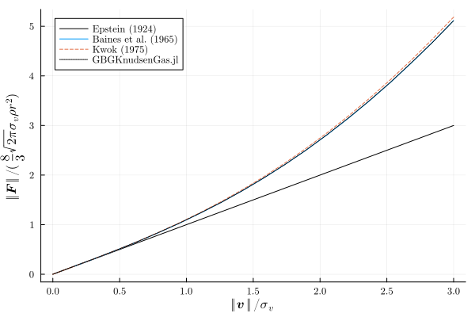

Example: Epstein drag calculation
We provide a concrete example of how to use GBGKnudsenGas.jl. Namely, we compute the Epstein drag on a sphere and compare it to analytical predictions.
Epstein drag
Consider stationary flow of a Knudsen gas past a sphere with specular collisions. The gas is at thermal equilibrium, with unperturbed (at infinity) temperature $T$, density $\rho$, and mean velocity $\langle \boldsymbol v_0 \rangle$. Angle brackets $\langle {\cdot} \rangle$ denote ensemble averages, and primes ${\cdot}'$ denote the corresponding fluctuations. Before colliding with the body, the initial particle velocity $ \boldsymbol v_0$ follows the Maxwell–Boltzmann probability density function
\[f(\boldsymbol v_0) = \frac{1}{(\sqrt{2 \pi \sigma_v^2})^3} \exp \biggl[- \frac{(\boldsymbol v_0 - \langle \boldsymbol v_0 \rangle) \cdot (\boldsymbol v_0 - \langle \boldsymbol v_0 \rangle)}{2 \sigma_v^2}\biggr],\]
where
\[\sigma_v = \sqrt{\frac{k_\text{B} T}{m}},\]
and $m$ is the mass of a single particle. The speed of sound $c$ in the gas is defined through the adiabatic index $\gamma$:
\[c = \sqrt{\gamma \frac{k_\text{B} T}{m}} = \sqrt \gamma \sigma_v.\]
For a monatomic gas $\gamma = 5/3$. The Mach number $\text{Ma}$ is
\[\text{Ma} = \frac{\| \langle \boldsymbol v_0 \rangle \|}{c} = \frac{\| \langle \boldsymbol v_0 \rangle \|}{\sigma_v \sqrt \gamma}.\]
Let $\boldsymbol F$ be the force that the flowing gas exerts on the sphere and $r$ be the radius of the sphere. In the limit of small Mach numbers, $\text{Ma} \ll 1$, the Epstein (1924) expression for $F_\text{drag}$ is
\[\boldsymbol F_\text{Epstein (1924)} = - \frac{8}{3} \sqrt{2 \pi} \sigma_v \rho r^2 \langle \boldsymbol v_0 \rangle,\]
see the papers
- Epstein, Paul S. (1924). "On the resistance experienced by spheres in their motion through gases." Physical Review, 23(6), 710, 10.1103/PhysRev.23.710.
- Li, Zhigang, and Wang, Hai (2003). "Drag force, diffusion coefficient, and electric mobility of small particles. I. Theory applicable to the free-molecule regime." Physical Review E, 68(6), 061206, 10.1103/PhysRevE.68.061206
For arbitrary Mach numbers, a good approximation for $F_\text{drag}$ was given by Kwok (1975):
\[\boldsymbol F_\text{Kwok (1975)} = \sqrt{1 + \frac{9\pi}{128} \biggr( \frac{\| \langle \boldsymbol v_0 \rangle \|}{\sigma_v} \biggr)^{\!2} } \, \boldsymbol F_\text{Epstein (1924)},\]
see the papers
- Laibe, Guillaume, and Price, Daniel J. (2012). "Dusty gas with smoothed particle hydrodynamics–II. Implicit timestepping and astrophysical drag regimes." Monthly Notices of the Royal Astronomical Society, 420(3), 2365, 10.1111/j.1365-2966.2011.20201.x
- Kwok, Sun (1975). "Radiation pressure on grains as a mechanism for mass loss in red giants." Astrophysical Journal, 198(6??), 583, 10.1086/153637.
Kwok's formula is accurate within 1% of the exact expression. The exact formula for $\boldsymbol F$ by Baines et al. (1965), but we won't use it, see
- Baines, M. J., Williams, I. P., Asebiomo, A. S., & Agacy, R. L. (1965). "Resistance to the motion of a small sphere moving through a gas." Monthly Notices of the Royal Astronomical Society, 130(1), 63, 10.1093/mnras/130.1.63.
Monte Carlo calculations of the Epstein drag with GBGKnudsenGas.jl
Full code of this computation is available in examples/epstein_drag.jl. To launch it, execute
$julia epstein_drag.jlComputing $\boldsymbol F$
We start by defining our sphere, which we call epstein_sphere. We set its radius to $1.0$ and center it in the origin $(0, 0, 0)$ of the Cartesian coordinate system:
using StaticArrays
using GBGKnudsenGas
epstein_sphere = Sphere(SA[0.0, 0.0, 0.0], 1.0)Next, we need to generate the initial state of the gas particles before they hit the sphere. We need to sample the ...
This initial state of a gas particle can be obtained with get_initial_particle_state(mean_v, std_v, domain_radius). However, we are interested only in particles that will collide with the sphere. Given that domain_radius is much larger than the radius of epstein_sphere, most of the generated particles will miss the epstein_sphere. Hence we write a simple function find_single_collision that keeps drawing particles from the initial distribution until it finds one that collides with the body. Later we call find_single_collision with epstein_sphere for the body. The function returns the initial state of the particle particle_before, as well as its state after the collision particle_after:
function find_single_collision(body, mean_v, std_v, domain_radius)
missed_particles_number = 0
while true
particle_before = sample_particle_state_uniform_flow(mean_v, std_v, domain_radius)
particle_after = collide_with_body(particle_before, body)
if !isnothing(particle_after)
return particle_before, particle_after, missed_particles_number
end
missed_particles_number += 1
end
endTo accurately estimate ensemble averages, we need a large sample of particles that collided with the body. The function run_simulation below finds sample_size particles (later we set sample_size to 10^6) that collided with the body and returns two arrays, one with the initial state of the particles before the collision (particles_before_collision) and one with the particle states after the collision (particles_after_collision). The code is multithreaded to take advantage of a multi-core CPU:
using Base.Threads
function run_simulation(body, mean_v, std_v, domain_radius, sample_size)
particles_before_collision = Array{Particle, 1}(undef, sample_size)
particles_after_collision = Array{Particle, 1}(undef, sample_size)
missed_particles_numbers = Array{Int64, 1}(undef, sample_size)
@threads for i in 1:sample_size
particles_before_collision[i], particles_after_collision[i], missed_particles_numbers[i] = find_single_collision(body, mean_v, std_v, domain_radius)
end
return particles_before_collision, particles_after_collision, missed_particles_numbers
endFinally, we write a function to calculate $`\langle \Delta \boldsymbol{v} \rangle_\text{c}`$ for the specified Mach number Ma:
using Statistics
using LinearAlgebra
function drag_MC(body, mean_v_norm, std_v, domain_radius, sample_size)
mean_v = SA[mean_v_norm, 0.0, 0.0]
particles_before_collision, particles_after_collision, missed_particles_numbers = run_simulation(body, mean_v, std_v, domain_radius, sample_size)
collision_probability = sample_size / (sum(missed_particles_numbers) + sample_size)
f = -mean(norm(p_b.v) * (p_a.v - p_b.v) for (p_b, p_a) in zip(particles_before_collision, particles_after_collision)) * collision_probability * π * domain_radius^2
return f[1]
endWe call it for our epstein_sphere and 10 different values of the Mach number, and calculate Epstein’s $\delta$:
mean_v_norms = range(0.0, 3.0, 20)
drag_values = drag_MC.(Ref(epstein_sphere), mean_v_norms, 1.0, 2.0, 10^6)
drag_Epstein(mean_v_norm, std_v) = 8/3 * √(2 * π) * std_v * epstein_sphere.r^2 * mean_v_norm
drag_Kwok(mean_v_norm, std_v) = drag_Epstein(mean_v_norm, std_v) * √(1 + 9 * π / 128 * (mean_v_norm / std_v)^2)
plot(
mean_v_norms, [drag_Epstein.(mean_v_norms, 1.0), drag_Kwok.(mean_v_norms, 1.0), drag_values] ./ (8/3 * √(2 * π) * 1.0 * epstein_sphere.r^2),
label = ["Epstein (1924)" "Kwok (1975)" "GBGKnudsenGas.jl"],
color = [:black 1 1], linestyle = [:solid :solid :dash],
ylabel = L"‖\! 𝑭\ ‖ / (\frac{8}{3} \sqrt{2 \pi} \sigma_v \rho r^2)",
xlabel = L"‖\! 𝒗\ ‖ / σ_v", xticks = 0:0.5:3
)
display(plot!())
savefig("Epstein_drag.svg")
Computing Epstein coefficient
using ForwardDiff
epstein_coefficient_MC = ForwardDiff.derivative(mean_v_norm -> drag_MC(epstein_sphere, mean_v_norm, 1.0, 2.0, 10^6), mean_v_norm)
epstein_coefficient = 8/3 * √(2 * π) * epstein_sphere.r^2
println(epstein_coefficient_MC / epstein_coefficient)